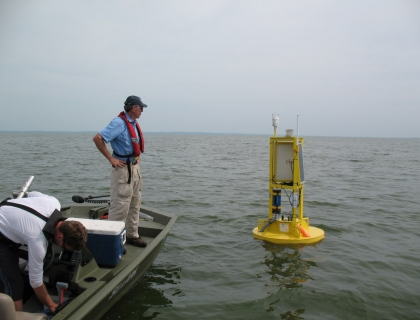

Development of Watershed TMDLs in the Great Lakes Basin
Template #134

Assessment of the hydrology, water quality, and response to simulated changes in phosphorus loading of the Winnebago Pool Lakes, Wisconsin
Purpose:
- Document the water quality of each of the Winnebago Pool Lakes;
- Develop phosphorus budgets for each of the Pool Lakes that quantifies each of their sources of phosphorus;
- Use calibrated eutrophication models to simulate the likely response of each of the Winnebago Pool Lakes to changes in phosphorus loading associated with various lake-management actions that might be implemented to improve water quality, and understand how these actions may affect the nutrient loading to the Lower Fox River and Green Bay;
- Provide information to construct a TMDL for the Winnebago Pool Lake, and information for the Lower Fox and Green Bay TMDL.
Description of Work: A detailed water budget will be developed for the Pool Lakes by measuring all major inflow and outflow sources and estimating the magnitude of minor sources. A detailed phosphorus budget will be obtained by quantifying the phosphorus loading associated with each water inflow and outflow source. Loading at each stream monitoring site will be estimated using a rating curve method or GCLAS with streamflow monitored by the USGS (three sites are being monitored by the USGS as part of this study) and water quality data collected by the Wisconsin DNR. Loading from ungaged areas will be obtained from the SWAT modeling being performed in the basin as part of separate studies. The current water quality (trophic state) of each of the four lakes in the Winnebago Pool will be obtained from the Wisconsin DNR and evaluated relative to longer-term trends. These data will be used to verify/calibrate selected models in BATHTUB. BATHTUB will then be used to simulate the likely response of each of the Pool Lakes to phosphorus loading changes associated with various lake-management actions that might be implemented and specific climate scenarios. Output from the lake to the Lower Fox River will be estimated from data collected by the Wisconsin DNR at Neenah and Menasha and using output from the BATHTUB model. This information will be supplied to those modeling the watershed downstream of Lake Winnebago.
Point of Contact:
Dale M. Robertson
dzrobert@usgs.gov
Fish assemblage data is needed to develop total maximum daily loads and implementation plans for impaired AOCs and tributaries in the Basin. Development of the TMDLs will include determining the sources of the pollutant, calculating loading allocations to ensure the designated uses will be met, and developing an implementation plan to achieve these allocations. TMDLs will address several pollutants including nutrients, sediment and degraded habitat.
Purpose:
This subproject would allow USGS and the Indiana Department of
Environmental Management (IDEM) to conduct sampling of fish assemblages in
streams of the Pigeon Creek watershed. This sampling will provide
information that USEPA needs in fulfilling its role under the Clean Water
Act (CWA) of developing TMDLs for the list of impaired waters submitted by
States and Tribes.
Description of Work: Sample fish communities at 40-50 sites in Pigeon Creek watershed. This sampling will provide information that USEPA needs in fulfilling its role under the Clean Water Act (CWA) of developing TMDLs for the list of impaired waters submitted by States and Tribes. The Pigeon Creek watershed is listed in 2008 by Indiana as impaired for biotic communities with possible causes due to sediment and nutrients. Sampling to determine the fish assemblages in the Pigeon Creek watershed will assist USEPA and IDEM clarify the main causes of impairment in the Pigeon Creek watershed.
Point of Contact:
Jeffrey W. Frey
jwfrey@usgs.gov